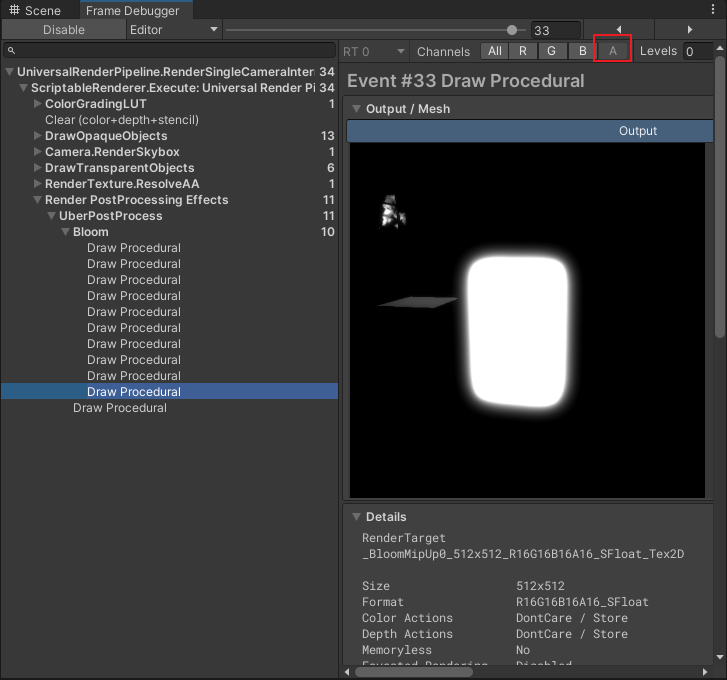

MR环境下在URP中实现HDR Bloom
概述
在MR环境下，HDR
Bloom是一个很重要的效果，很多美术效果尤其是光效都需要HDR
Bloom来提升画面的质感。
但是在URP中，启用HDR默认是用的B10G11R11_UFloatPack32的格式，这个格式会牺牲透明通道，导致MR失效。
所以翻看Pico或者Meta的文档，他们都不允许开启HDR。
然后是Bloom。URP的bloom是按照RGBM编码在rgba四个通道中，计算时解码，也丢失了透明通道。
所以在MR环境下，要实现HDR Bloom，就需要自己对URP进行一些修改。
HDR
首先来处理HDR
启用64位HDR精度
首先是启用64位HDR精度，这个在URP中是有的（印象中2021的版本没有？），只是默认没有开启。
URP的配置文件中把很多选项隐藏了起来，要通过勾选Show Additional Properties来显示。
然后就可以看到HDR Precision选项了，把它改成64 Bits就可以了。
这里会导致显存带宽的增加，要注意。
修改UberPost
URP的后处理比如色调映射、HDR
Mapping等都是在UberPost这一个Shader中实现的。
这里可以看到，它根本没有采样透明通道。
half3 color = (0.0).xxx;
{
color = SAMPLE_TEXTURE2D_X(_BlitTexture, sampler_LinearClamp, SCREEN_COORD_REMOVE_SCALEBIAS(uvDistorted)).xyz;
}所以要修改这个Shader，把透明通道也采样进来。
half3 color = (0.0).xxx;
float alpha = 1.0;
{
float4 vv = SAMPLE_TEXTURE2D_X(_BlitTexture, sampler_LinearClamp, SCREEN_COORD_REMOVE_SCALEBIAS(uvDistorted));
color = vv.xyz;
alpha = vv.w;
}到这里，MR环境下的HDR就可以正常工作了。
Bloom
然后是Bloom
Shader修改
先来看看Bloom.Shader
half4 EncodeHDR(half3 color)
{
#if _USE_RGBM
half4 outColor = EncodeRGBM(color);
#else
half4 outColor = half4(color, 1.0);
#endif
#if UNITY_COLORSPACE_GAMMA
return half4(sqrt(outColor.xyz), outColor.w); // linear to γ
#else
return outColor;
#endif
}
half3 DecodeHDR(half4 color)
{
#if UNITY_COLORSPACE_GAMMA
color.xyz *= color.xyz; // γ to linear
#endif
#if _USE_RGBM
return DecodeRGBM(color);
#else
return color.xyz;
#endif
}可以看到，Bloom是用RGBM编码的，这个编码会丢失透明通道。
所以把这种编码全部干掉，直接用RGBA编码，因为用了R16G16B16A16格式，所以不用担心精度问题。
half4 EncodeHDR(half4 color)
{
return color;
}
half4 DecodeHDR(half4 color)
{
return color;
}其他的大同小异，宗旨就是不要丢失透明通道。比如在上下采样时都要保留透明通道。
以上采样为例
从
half3 Upsample(float2 uv)
{
half3 highMip = DecodeHDR(SAMPLE_TEXTURE2D_X(_BlitTexture, sampler_LinearClamp, uv));
#if _BLOOM_HQ && !defined(SHADER_API_GLES)
half3 lowMip = DecodeHDR(SampleTexture2DBicubic(TEXTURE2D_X_ARGS(_SourceTexLowMip, sampler_LinearClamp), uv, _SourceTexLowMip_TexelSize.zwxy, (1.0).xx, unity_StereoEyeIndex));
#else
half3 lowMip = DecodeHDR(SAMPLE_TEXTURE2D_X(_SourceTexLowMip, sampler_LinearClamp, uv));
#endif
return lerp(highMip, lowMip, Scatter);
}
half4 FragUpsample(Varyings input) : SV_Target
{
UNITY_SETUP_STEREO_EYE_INDEX_POST_VERTEX(input);
half3 color = Upsample(UnityStereoTransformScreenSpaceTex(input.texcoord));
return EncodeHDR(color);
}
改成
half4 Upsample(float2 uv)
{
half4 highMip = DecodeHDR(SAMPLE_TEXTURE2D_X(_BlitTexture, sampler_LinearClamp, uv));
#if _BLOOM_HQ && !defined(SHADER_API_GLES)
half4 lowMip = DecodeHDR(SampleTexture2DBicubic(TEXTURE2D_X_ARGS(_SourceTexLowMip, sampler_LinearClamp), uv, _SourceTexLowMip_TexelSize.zwxy, (1.0).xx, unity_StereoEyeIndex));
#else
half4 lowMip = DecodeHDR(SAMPLE_TEXTURE2D_X(_SourceTexLowMip, sampler_LinearClamp, uv));
#endif
return lerp(highMip, lowMip, Scatter);
}
half4 FragUpsample(Varyings input) : SV_Target
{
UNITY_SETUP_STEREO_EYE_INDEX_POST_VERTEX(input);
half4 color = Upsample(UnityStereoTransformScreenSpaceTex(input.texcoord));
return EncodeHDR(color);
}
这样就得到了保留透明通道的Bloom贴图。

最终绘制
最后在UberPost中把Bloom的结果和HDR的结果合并。
half4 bloom = SAMPLE_TEXTURE2D_X(_Bloom_Texture, sampler_LinearClamp, SCREEN_COORD_REMOVE_SCALEBIAS(uvBloom));
alpha = alpha + bloom.w * _Bloom_Alpha;透明度混合问题
这里有个问题，一般的bloom是加到Color上，但这里要考虑透明通道，最终和MR相机的图层进行混合时，是用透明通道来混合的。
这导致含有透明度的bloom颜色再叠加透明度会变淡。所以这里再传一个参数进去，适当提高透明度。
但不能加太多，否则周围没有bloom颜色的地方（默认黑色），就会被多出来的透明度混合成黑色。
这里只能寄希望于Meta或者Pico给出MR透视的贴图，当作天空盒提前渲染到相机的buffer上才能解决这个问题。
但如果这样做，又会导致MR相机的贴图被二次采样，势必会降低渲染质量。（目前meta和pico都给出了对应的SDK来获取相机图像，但都有一些限制）
或者利用现有硬件的合成层功能，把这张bloom贴图提出来，单独给到头显，让头显来用颜色叠加模式来混合。
但目前pico或meta合成层仅仅支持常见的Quad、Cylinder、Equirect等几种模式，无法直接传入贴图应用到头显上。
便于在编辑器调试的MR背景图
在编辑器中，MR背景图是黑色的，这样在调试时就看不到背景了，也就无法确认Bloom经过透明度混合后的效果。
所以在UberPost中加入一张背景图，模仿alpha混合的效果。
这样就可以在编辑器中看到背景了。
#ifdef BG_TEXTURE
float4 bg = SAMPLE_TEXTURE2D_X(_BG_Texture, sampler_PointClamp, input.texcoord);
alpha = clamp(alpha, 0, 1);
color = color * alpha + bg * (1 - alpha);
return half4(color, 1);
#endif结语
到这里，HDR Bloom在MR环墋下就可以正常工作了。
但凡事都有代价，这里的代价就是显存带宽的增加，要根据实际情况来决定是否使用。